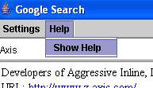

This is a client that can be used to do Google searches using the Google Web API. It allows the user to enter a word as the query parameters in the given text field of the GUI and in a moment it shows the search results in the text pane below. The special feature of this client is, when the user presses the space key after typing a word it starts searching for that word and displays the results while the user typing the next word. This feature is made possible by the non blocking invocation capability of Axis2.
Google search operation is done by means of Google Web API. (You can learn more and create your own account in Google Web API here). If you need to build your own client using this Web API, you should obtain a license key which can be obtained easily at the Google Web API page.
When you work with this client, you can use the given license key with this release (This default key is included in a property file inside the jar file which will be automatically used in the sample when started). However it is convenient for you to get a license key of your own since the daily limit per key is 1000 requests and the limit will be reached quickly if a single license key is shared by many users.
The first and the easiest option is downloading the binary distribution which includes the compiled samples. Scripts are included for starting the program in either Windows or Unix.
Second option is to build the samples from source. This has to be done with Maven. All you have to do is go to Modules/Samples and type maven in the command prompt. This will compile and will build all the jars required and copy the necessary scripts as well.
Execute the necessary shell scripts / batch files to start the tool.
The following figure shows the UI of the tool
The key can be set by using the settings menu

The Help menu pops up a help window which includes this text

Now you are ready to do a Google search - SOAP style. Just type the word you want to search in the small text field in the GUI. After you press enter or space, client starts the searching and you will see the results displayed few seconds.
You can also set the number of results per page from the set menu. Maximum is 10 results. You can view more results for the last search by pressing "More Results" button and can come back to previous page by "Previous Page" button.
This client is built from five classes.

The main method is inside the AsynchronousClient class. First it instantiates a LinkFollower and a GUIHandler . Then the main program calls to the GUIHandler to display the GUI. After that, the program starts running and captures and acts according to the events fired by the GUI. The KeyListner that listens to the text field events fires a search when it detects a space or Enter key. It would not take long time send a request, but here it's done using a separate thread because it's important to isolate the GUI from internal actions. The user never gets interrupted in anyway. So the user can type the query terms continuously on the text field while the program does the search for the query terms that are already typed and displays the results.
The use of the other thread comes when the user click on a hyperlink. Then the program opens the URL in a new window. This may take a while to load up depending on the Web site. Hence a separate thread is used , where the LinkFollower is made a Thread.
Now we have two threads, one is for sending the soap request without interrupting the user and other is to open a new windows for clicked URLs. But there is another important action. That is processing the received response and displaying the results. That is done in the ClientCallbackHandler. This is also an important feature of the InvokeNonBlocking operation of Axis2. It lets you to have an additional thread in the callbackHandler class. All you have to do is send an object of that class as a parameter when you send the message. How it is done in the program is as follows.
call.invokeNonBlocking(opdesc, requestContext, new
ClientEchoCallbackHandler());
opDesc is a QName which caries the operation name and relevant namespace.
requestContext is a MessageContext that holds the request soap envelope.
ClientEchoCallbackHandler is a class that receives the response soap envelope.
Briefly, client thread is just sending the requests and it is not waiting for the response. So this client can send any amount of requests sequentially irrespective of whether the responses are received or not. ClientEchoCallbackHandler is responsible for receiving response messages and processing it. It extracts the required details from the message and displays it in the text pane of the GUI.
The request soap message is built at the ClientUtil class. According to the Google Web API WSDL file, required namespaces are selected and attached to the envelope. We don't have to include anything in the header. The name of the first child element of the body should be operation name and it should be namespace qualified. We also have to include the binding namespace to this element. Here it is attached as an attribute to that element,
OMElement operation = omFactory.createOMElement("doGoogleSearch",
"urn:GoogleSearch", "ns1");
opration.addAttribute("SOAP-ENV:encordingStyle",
"http://schemas.xmlsoap.org/soap/encoding/", null);
All the child elements of the operation element are carrying required parameters such as license key, query terms, results per page, etc. (for more information, download the developer kit from http://www.google.com/apis/download.html , and refer "APIs_Reference.html")
This is a sample request soap enelope,
<soapenv:Envelope
xmlns:soapenv="http://schemas.xmlsoap.org/soap/envelope/"
xmlns:SOAP-ENC="http://schemas.xmlsoap.org/soap/encoding/"
xmlns:xsi="http://www.w3.org/1999/XMLSchema-instance/"
xmlns:xsd="http://www.w3.org/1999/XMLSchema">
<soapenv:Header></soapenv:Header>
<soapenv:Body>
<ns1:doGoogleSearch xmlns:ns1="urn:GoogleSearch" SOAP-ENV:encordingStyle="http://schemas.xmlsoap.org/soap/encoding/">
<key xmlns="" xsi:type="xsd:string">F0wt5EFQFHKxTs+rl3P+27o6D112BTWd</key>
<q xmlns="" xsi:type="xsd:string">axis</q>
<start xmlns="" xsi:type="xsd:int">0</start>
<maxResults xmlns="" xsi:type="xsd:int">2</maxResults>
<filter xmlns="" xsi:type="xsd:boolean">true</filter>
<restrict xmlns="" xsi:type="xsd:string"></restrict>
<safeSearch xmlns="" xsi:type="xsd:boolean">false</safeSearch>
<lr xmlns="" xsi:type="xsd:string"></lr>
<ie xmlns="" xsi:type="xsd:string">latin1</ie>
<oe xmlns="" xsi:type="xsd:string">latin1</oe>
</ns1:doGoogleSearch>
</soapenv:Body></soapenv:Envelope>
You can find a sample soap response message from the toolkit that you download from the Google Web API page.. ClientCallbackHandler processing response soap and extract elements which have the local names as "snippet" and "URL". It has to work with AXIOM. You can notice that it uses several Iterators to go through the children of an OMElement. the Iterator returns an object that can be cast into an OMNode. Since you can't call for the children of an OMNode we have to cast it to an OMElement where a type checking needs to be done as follows.
Iterator iterator0 =
operation.getChildren();
while (iterator0.hasNext()) {
OMNode node = (OMNode) iterator0.next();
if (node.getType() == OMNode.ELEMENT_NODE) {
OMElement elem = (OMElement) node;
A notable fact here is that the text in the snippet element is in the HTML format. But it cannot be displayed straight away because you have to attach the HTML header and footer to that. "beginHTML" and "endHTML" static variables are used for that purpose.
If you observe the WSDL file of the Google API, you can find two more operations other than "doGoogleSearch". Those are "doGetCachedPage" and " doSpellingSuggestion" . You can extend this program to work these operations too. Because the soap requests and responses are different, it will need separate ClientUtil classes and ClientCallbackHandler classes to fulfill this task.